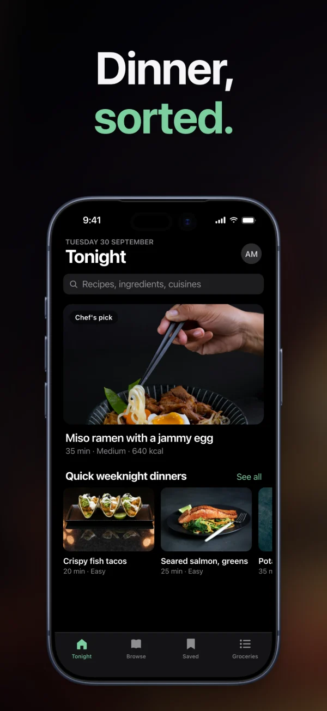
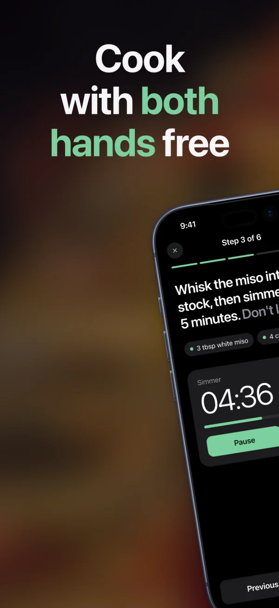
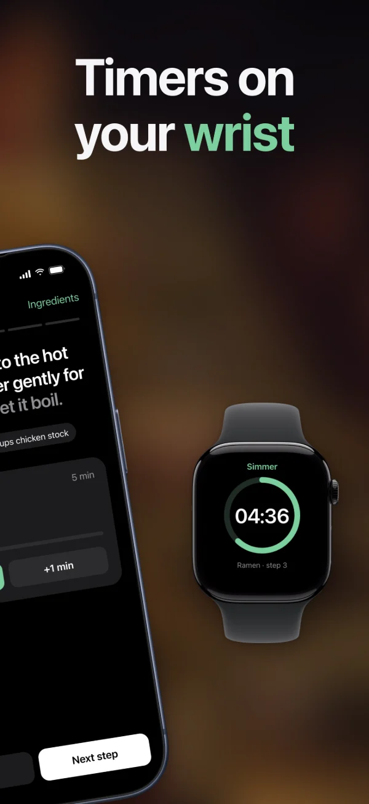
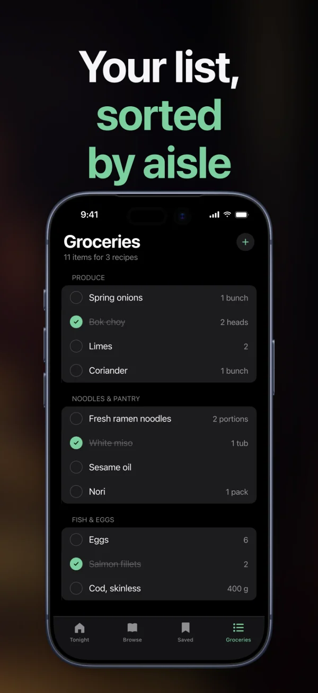

The capture bar
Press ⌘⇧2 for a screenshot or a recording of an area, a window or the whole screen.
● Features
Capture, record, design, animate and export. Here’s every part, a sentence each.
Press ⌘⇧2 for a screenshot or a recording of an area, a window or the whole screen.
A clean 9:41 status bar, permissions granted up front, taken once animations settle.
Any URL, in real Mobile Safari or desktop Chrome.
A window by name, or the whole screen.
Your library, the Desktop, any folder, or just the clipboard.
Every capture opens framed: padding, rounded corners and a soft shadow on a macOS wallpaper.
Drag it anywhere, pick its shape and size, or turn it off mid-recording.
The microphone and system sound, after a 3-2-1 countdown.
A smooth cursor at any size, with a ripple on every click.
Calm zooms that follow the cursor; drag, change or delete each one.
⌘B cuts, ⌫ deletes, and the screen, camera, voice and zooms move together.
A waveform to move, trim, fade and turn up or down.
Apple’s own art for iPhone, iPad, Apple Watch and MacBook, tilted in 3D if you like.
Looks, gradients, macOS wallpapers, Unsplash, your photo or an AI image.
Name the words on screen to lift a row, magnify it or number the steps.
Text, arrows, circles, numbers, badges and stickers, clean or hand-drawn.
Reprint the backdrop as a risograph or halftone, or repaint it in oil. Never your UI.
Grain, vignette, colour grades and soft focus behind a sharp device.
Starting designs
Once a screenshot is in, designs made from it and its colours show up to pick from.

One design
One backdrop runs across the set, and a device can sit across two screens.




Each App Store and Google Play size is a preset; an iPad set comes from the iPhone one.
One screen’s backdrop, text or device look onto all the others.
Every screen at every size, numbered in store order, ready for fastlane.
Press ⌘T, then + at the playhead: how a thing comes in, moves or leaves.
Float, drift or push in, or bring things in one by one.
Clips in a row, joined by a push, a wipe, an iris or a crossfade.
App Store previews and social sizes, drawn on the GPU, as MP4, MOV, GIF or WebM.
Three different designs from your screen. Keep the one you like.
“Tilt the phone and make the headline green.” Every edit is one undo away.
It looks at the result and fixes what’s off before you see it.
Say “always Space Black” once and every design follows.
Describe the motion and it writes the timeline.
It uses your Claude Code or Codex sign-in, or an API key.
Add Screenshotter to Claude Code, Codex or OpenCode with one command. Your agent captures your app, designs the set and saves it where you can keep editing.
claude mcp add screenshotter --scope user -- \ /Applications/Screenshotter.app/Contents/MacOS/Screenshotter mcp
codex mcp add screenshotter -- \ /Applications/Screenshotter.app/Contents/MacOS/Screenshotter mcp
Then add tool_timeout_sec = 600 under [mcp_servers.screenshotter] in ~/.codex/config.toml, so videos have time.
// ~/.config/opencode/opencode.json, inside "mcp" "screenshotter": { "type": "local", "command": [ "/Applications/Screenshotter.app/Contents/MacOS/Screenshotter", "mcp" ] }
Real screens from the Simulator, the web or a Mac, still or recorded.
capture_screenshotcapture_webcapture_macrecord_simulatorrecord_webrecord_macsimulator_controllist_simulatorslist_appsFinished images and whole sets, aimed at the words on screen.
create_mockupcreate_mockup_setapply_recipeapply_set_templatelist_templateslayout_mockuplist_mockup_optionsfind_textVideos and App Store previews, and any moment of one as a picture.
create_videocreate_sequencepreview_videopreview_sequenceOpens what you saved in the app, and saves its work there for you to edit.
list_scenesget_scenesave_sceneexport_scene_setAn art-direction guide, close-ups to check its work, and your house style.
design_guidecrop_imagecreate_gridget_house_styleremember_styleAnything that runs a local server works: Cursor, Claude Desktop and the rest.